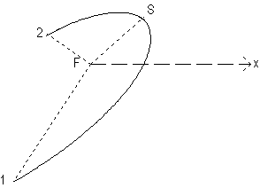

Miroir parabolique, elliptique, ou
hyperbolique(concave ou convexe)

Définition
Il est défini par les points 1 et 2 (extrémités du
miroir), le foyer F, et le sommet S.
Le miroir peut être ajouté:
- en cliquant sur le bouton de la barre d'outil ayant la forme du miroir
conique (concave ou convexe), puis en faisant un clic simple pour saisir
le point 1, puis en faisant un clic simple pour saisir le foyer, puis
en faisant un clic simple pour saisir lesommet, puis en faisant un clic
simple pour saisir le point 2 (ne pas maintenir le bouton de la souris enfoncé
entre les deux points)
OU
- menu "Ajouter" puis "Système optique réel" puis "Miroir
cônique ". Dans ce cas, on définit le miroir par les coordonnées
de F, l'angle polaire de l'axe focal (angle entre Fx et FS, compté
positif dans le sens antihoraire), les angles polaires de FM1 et FM2 (M1
et M2 étant les extrémités du miroir), le paramétre
de la conique, et son excentricité. On donne aussi le caractère
concave ou convexe du miroir.
Options
On peut imposer
-que les hachures soient tracées ou non à l'écran
-l'épaisseur et la couleur du trait représentant le miroir
à l'écran
- que l'axe focal soit tracé ou pas à l'écran entre
F et S
- la couleur de l'axe focal à l'écran
Ces propriétés peuvent être rendues accessibles:
- à la construction du miroir si on passe par le menu "Ajouter"
- à tout instant en cliquant sur le bouton "Propriétés"
de la barre d'outil, puis en cliquant sur un des cercles bleus qui apparaissent
sur l'élément dont on veut obtenir les propriétés;
ne pas oublier à la fin de cliquer sur le bouton "Fin prop." de la
barre d'outil pour quitter le mode propriétés.
Divers
On peut demander que la normale au miroir soit tracée à
chaque point d'intersection d'un rayon lumineux avec ce miroir:
- menu "Options", vérifier que "Afficher les normales" est coché
OU
- dans la barre d'outil, boite à cocher "Normales"
On peut aussi demander que les angles d'incidence soient affichés
(en °):
- menu "Options", vérifier que "Afficher les angles" est coché
OU
- dans la barre d'outil, boite à cocher "Angles d'incidence et
de réfraction"
L'angle de réflexion n'est pas affiché, afin de ne pas surcharger
les représentations.
Le nombre de décimales sur les angles est fixé dans
la boite de dialogue des options des normales: menu "Options" puis "Options
des normales"
Retour à la page
d'accueil